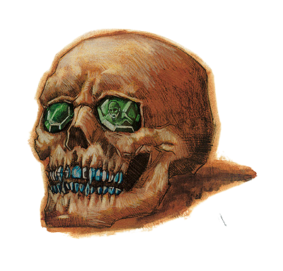

Tops Criaturas D&D V5a
Demilith
A imortalidade concedida a um lich dura apenas enquanto ele alimentar as almas mortais com seu filactério. Se ele vacilar ou falhar nessa tarefa, seus ossos se transformam em pó até que apenas o crânio permaneça. Este "demilich" contém apenas um fragmento da força vital malévola do lich - apenas o suficiente para que, se for perturbado, esses restos se elevem no ar e assumam a forma de um fantasma. O crânio então emite um uivo terrível que pode matar os fracos de coração e deixar os outros tremendo de medo. Deixado sozinho, ele afunda novamente e retorna à paz vazia de sua existência. .Poucos liches procuram se tornar demiliches, pois isso significa o fim da existência que eles esperavam preservar ao se tornarem mortos-vivos. No entanto, o tempo pode corroer a razão e a memória do lich, fazendo com que ele se retire para sua antiga tumba e se esqueça de se alimentar de almas. Os feitiços que conhecia desaparecem de sua mente, e ele não canaliza mais a energia arcana que empunhava como um lich. No entanto, mesmo como um mero crânio, ele continua sendo um inimigo mortal e irritante.
Existência duradoura. Mesmo depois que um lich é reduzido a um estado de demilich, seu filactério sobrevive. Enquanto seu filactério estiver intacto, o demilich não pode ser destruído permanentemente. Seu crânio se reforma após 1d10 dias, restaurando a criatura ao seu estado miserável. Se tiver a presença de espírito para fazê-lo, um demilich pode recuperar seu antigo poder alimentando apenas uma alma com seu filactério. Fazer isso restaura o demilich à forma de lich, reconstituindo seu corpo morto-vivo.
Acererak e seus discípulos. A transformação em um demilich não é um fim amargo para todos os liches que a vivenciam. Feito como uma escolha consciente, o caminho do demilich torna-se o próximo passo em uma evolução sombria. O lich Acererak - um poderoso mago e demonologista e o infame mestre da Tumba dos Horrores - antecipou sua própria transformação, preparando-se para ela colocando pedras encantadas nas órbitas e dentes de seu crânio. Cada uma dessas gemas de alma possuía o poder de capturar as almas das quais seu filactério se alimentaria. Acererak abandonou seu corpo físico, aceitando que ele iria mofar e se dissolver em pó enquanto ele viajava pelos planos como uma consciência desencarnada. Se o crânio que foi seu último resto físico alguma vez fosse perturbado, suas joias reclamariam as almas dos intrusos insolentes para sua tumba, transferindo-as magicamente para seu filactério. Liches que seguem o caminho de Acererak acreditam que ao se libertarem de seus corpos, eles podem continuar sua busca por poder além do mundo mortal. Como seu patrono fez, eles protegem seus restos mortais em cofres bem guardados, usando gemas de alma para manter seus filactérios e destruir os aventureiros que perturbam seus covis. Acererak ou outro demilich como ele tem uma classificação de desafio de 21 (33.000 XP) ou 23 (50.000 XP) em seu covil e ganha a seguinte opção de ação adicional. Trap Soul. O demilich tem como alvo uma criatura que pode ver a até 9 metros dela. O alvo deve fazer um teste de resistência de Carisma CD 19. Em uma falha de salvamento, a alma do alvo é magicamente presa dentro de uma das joias do demilich. Enquanto a alma está presa, o corpo do alvo e todo o equipamento que ele carrega deixam de existir. Em um teste de resistência bem-sucedido, o alvo sofre 24 (7d6) de dano necrótico e, se esse dano reduzir o alvo a 0 pontos de vida, sua alma fica presa como se tivesse falhado no teste de resistência. Uma alma presa em uma joia por 24 horas é devorada e deixa de existir. Se o demilich cair para 0 pontos de vida, ele é destruído e se transforma em pó, deixando para trás suas joias. O esmagamento de uma gema libera qualquer alma presa dentro dela, ponto em que o corpo do alvo se forma novamente em um espaço desocupado próximo à gema e no mesmo estado de quando estava presa.
PsiCrystal
As características de um psicristal dependem de seu mestre. Seus Dados de Vida são iguais aos Dados de Vida de seu mestre (contando apenas os níveis em psion ou mais selvagem), seus pontos de vida são iguais à metade de seu mestre e seus bônus de teste de resistência são iguais aos de seu mestre. Características de construção
Um psicristal tem imunidade a veneno, sono, paralisia, atordoamento, doença, efeitos de morte, efeitos de necromancia, efeitos que afetam a mente (amuletos, compulsões, fantasmas, padrões e efeitos de moral) e qualquer efeito que requeira um salvamento de Fortitude, a menos que também funciona em objetos ou é inofensivo. Não está sujeito a acertos críticos, dano não letal, dano de habilidade, dreno de habilidade, fadiga, exaustão ou dreno de energia. Não pode curar danos, mas pode ser reparado. Os psicristais não têm os traços de construção usuais de visão no escuro e visão na penumbra. Psicristais Admitidos Habilidades O psicristal descrito aqui tem as habilidades especiais de autopropulsão, alerta, evasão aprimorada, compartilhar poderes, ligação telepática, visão e personalidade (Se seu mestre escolher não ativar a capacidade de autopropulsão, o psicristal reverte para uma velocidade de 0 pés e não tem pontuação de Força e sem pontuação de Destreza.) Habilidades Um psicristal (com sua habilidade de autopropulsão ativada) usa seu modificador de Destreza ao invés de seu modificador de Força em testes de Escalar. Ele tem um bônus racial de +8 em testes de Escalar e sempre pode escolher pegar 10, mesmo se for apressado ou ameaçado.